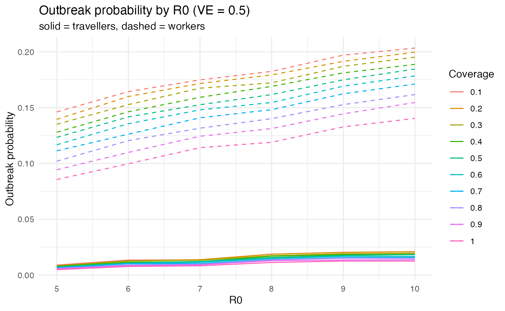

quarantinesim
quarantinesim.Rmd
library(quarantinesim)
library(dplyr)
#>
#> Attaching package: 'dplyr'
#> The following objects are masked from 'package:stats':
#>
#> filter, lag
#> The following objects are masked from 'package:base':
#>
#> intersect, setdiff, setequal, union
library(ggplot2)
data("data_quarantine")Introduction
quarantinesim is an R package that bundles a final,
cleaned dataset of quarantine outbreak scenarios and a Shiny app to
explore those scenarios interactively. Each row in the dataset
represents one epidemiological scenario defined by:
- basic reproduction number (R0),
- vaccine effectiveness (VE),
- vaccination coverage,
and the corresponding modelled outbreak probabilities for travellers and quarantine workers.
This vignette shows how to:
- load the dataset shipped with the package,
- do a quick data exploration,
- make a simple visualisation,
- launch the Shiny app.
Installation
If you are working inside your assignment project, install the package locally:
devtools::install()Then load it:
library(quarantinesim)The dataset: data_quarantine
The main dataset included in the package is called
data_quarantine.
The key variables are:
- R0 : basic reproduction number
- VE : vaccine effectiveness (0–1)
- coverage : vaccination coverage proportion (0–1)
- traveller_ob_prob : outbreak probability from travellers
- worker_ob_prob : outbreak probability from quarantine workers
- chance50, chance95 : time/iteration when outbreak probability reaches 50% / 95%
The dataset has already been merged and cleaned during package creation, so you do not need to join separate traveller/worker tables or timing summaries.
Quick exploration
A common task is to compare outbreak probabilities across different R0 values for a fixed vaccine effectiveness (VE). Below we pick VE == 0.5 and plot both traveller and worker probabilities, coloured by coverage.
data_quarantine |>
dplyr::filter(VE == 0.5) |>
ggplot2::ggplot(ggplot2::aes(x = R0)) +
ggplot2::geom_line(
ggplot2::aes(y = traveller_ob_prob, colour = factor(coverage))
) +
ggplot2::geom_line(
ggplot2::aes(y = worker_ob_prob, colour = factor(coverage)),
linetype = "dashed"
) +
ggplot2::labs(
title = "Outbreak probability by R0 (VE = 0.5)",
subtitle = "solid = travellers, dashed = workers",
y = "Outbreak probability",
colour = "Coverage"
) +
ggplot2::theme_minimal()
From this plot you can see that:
- higher R0 leads to higher outbreak probability,
- higher coverage shifts the curve downward,
- traveller and worker probabilities can behave differently, so plotting both is informative.
Launching the Shiny app
The package also includes a Shiny app located under inst/app/. You can launch it using the exported helper:
We keep eval = FALSE here so that the vignette can be built non-interactively. In an interactive R session, the app will open and you can:
- Select vaccine coverage using a slider,
- Choose the outcome to display:
- Traveller outbreak probability
- Worker outbreak probability
- Time to 50% outbreak
- Time to 95% outbreak
- Switch chart types between:
- Line (default)
- Points
- Bars grouped by VE
The Plot tab visualises how the chosen outcome varies as R₀ increases, with colours or facets representing different vaccine effectiveness (VE). The Data tab displays the underlying filtered dataset corresponding to the selected coverage, allowing you to inspect the exact outbreak probabilities and timing values used to generate the plots.
Below the plot, a short explanatory panel helps interpret the patterns:
Higher R₀ values generally correspond to higher outbreak probabilities, while higher vaccine coverage shifts the curves downward—reducing the likelihood of outbreaks.
Extending the package
You can extend quarantinesim by:
- Adding more visualisations (e.g., faceting by VE),
- Creating helper functions such as filter_by_ve(),
- Enhancing the Shiny interface (adding tabs or download buttons),
- Including additional simulated scenarios in data-raw/ and re-running usethis::use_data().
This vignette was created for the Monash University ETC5532 / Communicating with Data assignment to demonstrate package documentation and Shiny integration.